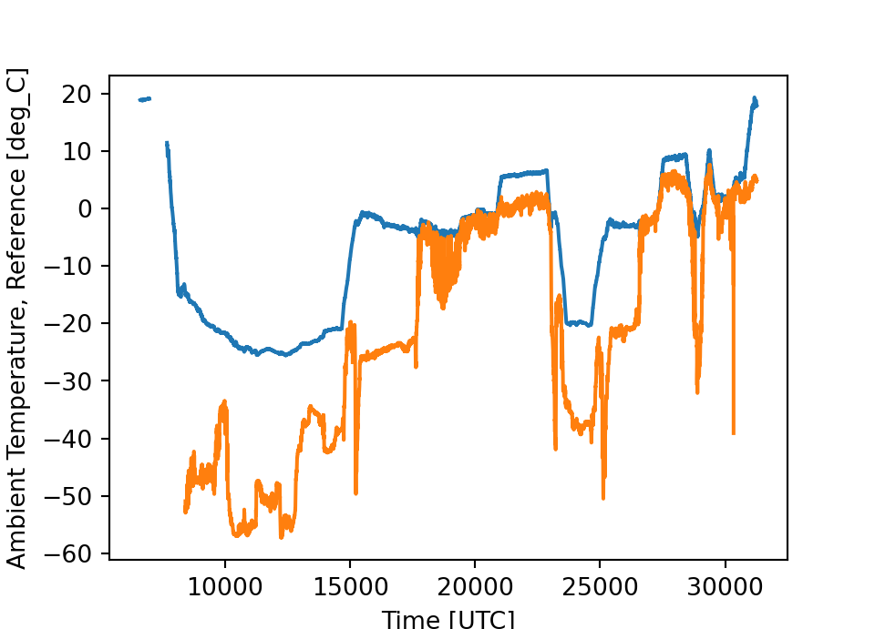
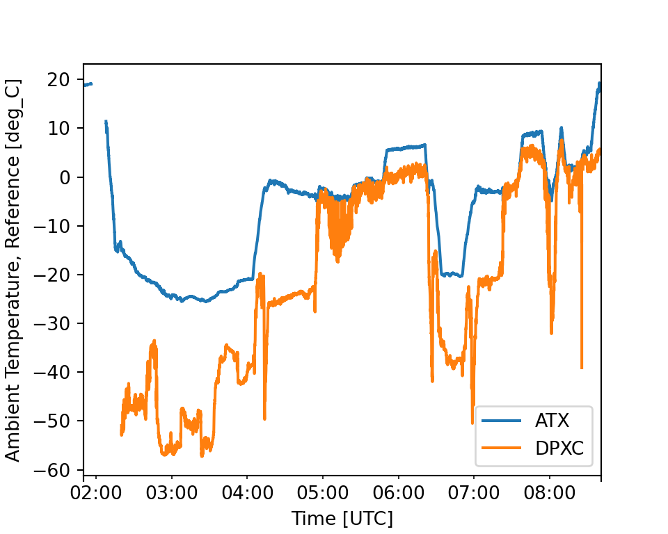
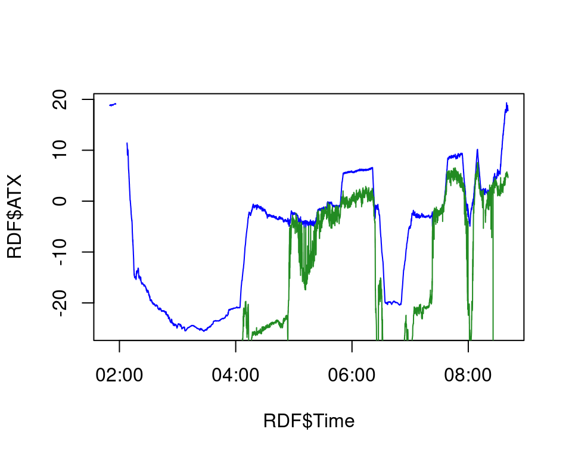
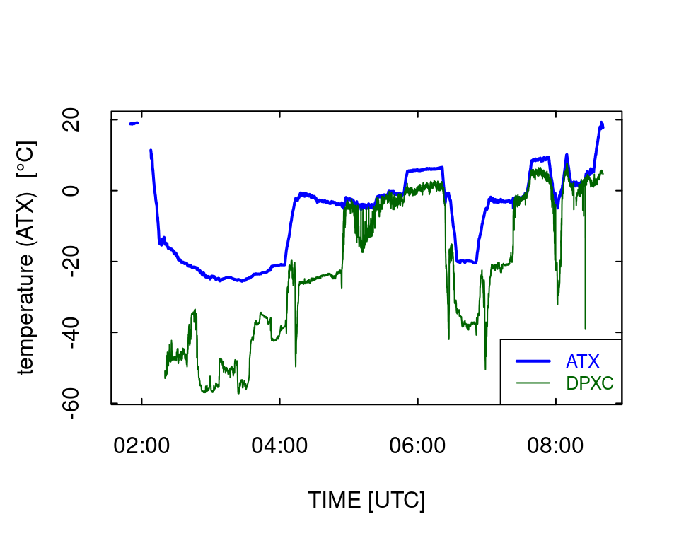

I recently learned of a very useful approach to documenting data-analysis projects in order to improve “reproducibility” of the results, which enables someone else to repeat, check and extend the results. I have been using R in RStudio for this purpose, with an R package called “knitr” that supports interleaving code segments and text in a single document. The new aspect that I learned recently is that either RStudio or “knitr” also supports Python code, so that enables new ways of combining calculations and documentation. The intent of this note is to illustrate that and provide a template that others might find useful. With the greater emphasis on Python at NCAR, some may find this a good approach to simple documentation tasks. Also, “R Markdown” is much easier to use than LaTeX, used in .Rnw files that I have been using.
I’m going to construct this note using both R and Python, but that’s not necessary. Either one can be used alone. They can also be used together, passing variables from R code to Python code and from Python code to R code, so the structure is quite flexible. Both use “R Markdown” for the text. This is a very easy language to learn and use, and RStudio in particular provides good help windows to remind users of the basics. RStudio provides additional web-based information at this URL. However, most of the text can be entered quite simply without much special formatting, so you don’t need the RStudio editor – any editor will work. There is enough flexibility that, as you get used to it, you can expand to include tables, figures, LaTeX equations, superscripts, subscripts, bold or italic formatting, various headers, and much more. In RStudio, when you click the Knit button a document will be generated that includes both text and the output of any embedded R code chunks or Python code chunks within the document. I’m using HTML output here but PDF output is also supported; just change the 5th line is this file. Later, I’ll provide some additional information in case you want to run this from an R console without RStudio.
If you need to set up Python in the directory from which this will be run, you can follow the instructions provided by RStudio at https://support.rstudio.com/hc/en-us/articles/360023654474-Installing-and-Configuring-Python-with-RStudio. Briefly, you can get started by entering these commands in a terminal with working directory where you will place your file. (I did this both in the RStudio directory and in the project directory under that; I don’t know if both are needed.) If you don’t have a version of python3 installed, you should start by installing locally from Miniconda; see https://docs.conda.io/en/latest/miniconda.html. Then:
conda init
pip install virtualenv
virtualenv python
conda create --name yourProject python # where you select "yourProject" -- e.g., WAC
conda activate yourProject
source python/bin/activate
conda install numpy
conda install pandas
conda install matplotlib
conda install netcdf4After installing python, you should place a file named “.Rprofile” in the directory from which you will run R or RStudio. Its contents should be this line: Sys.setenv(RETICULATE_PYTHON = “python/bin/python”) . That will permit R to find the right python version for your set-up. It appears that this only works for python-3.
You will also need the “knitr”, “reticulate”, and “rmarkdown” R packages, and to run this particular example you will need the “Ranadu” package. If you run this on EOL computers, you can place a file named .Renviron in your home directory and edit it so that it contains the following line:
R_LIBS="~cooperw/R/x86_64-redhat-linux-gnu-library/3.2"(The library may change as new versions of R are installed on EOL computers; 3.2 is current as of Oct 2020, although R is 3.6.) That will give you access to all the needed R packages.
In R Markdown code chunks are identified by the header ```{} and the footer ```. Code between the header and footer will be evaluated and can produce figures and other results that will be included in the final document at an appropriate place. Inside the header brackets, the processing “engine” (here, either r or python) specifies the processing language to use. Other possibilities are also available, but those two will be the focus here. The following is an illustrative example. The header, not printed, is “```{python, include = TRUE, echo = TRUE}” and the not-printed trailer is “```”:
from matplotlib import pyplot as plt
import numpy as np
import pandas as pd
import warnings## Illustrating a simple Python calculation and how it will appear in the output:
a = 1 + 3 + 18 + 33 + 73 + 37
print(a)## 165In the header, “include” causes anything the code chunk produces to be inserted into the text document and “echo” controls if the code should be shown in the document. Another way to include code results in the text is, for example, to use a = 'r py$a' which prints as “a = 165”. Here “py$” refers to a variable in the Python workspace.
Here is code to make a simple plot using Python and include it in the document:
## This is Python code
from netCDF4 import Dataset, num2date
ncDF = Dataset('/scr/raf_data/SOCRATES/SOCRATESrf15.nc')
fig = plt.figure(figsize=(5,3.6))
ax = fig.add_subplot(111)
plt.plot(ncDF["Time"], ncDF["ATX"])
plt.plot(ncDF["Time"], ncDF["DPXC"])
ax.set_xlabel('Time [UTC]')
ax.set_ylabel('%s [%s]' % (ncDF["ATX"].long_name, ncDF["ATX"].units))
plt.show()
The figure needs some additional processing to convert from the present abscissa (an index) to more useful time labels. To address that and also illustrate “pandas” I’ll put this information into a Pandas DataFrame and repeat the plot:
## This is Python code
VarList = ['ATX', 'DPXC'] ## Specify the variables to plot
times = ncDF.variables['Time'] ## ncDF was read in the preceding python chunk.
jd = num2date(times[:], times.units, only_use_cftime_datetimes=False) ## Define the index
d = [ncDF.variables[f][:] for f in VarList] ## Load the variables from the netCDF file
PDF = pd.DataFrame(index=jd) ## define an empty DataFrame with only an index
for i in range(len(VarList)): ## Add the variables to the pandas DataFrame
PDF[VarList[i]] = pd.DataFrame(d[i][:], index=jd)
tunits = times.units
ax = PDF.plot(figsize=(5,4))
## Make some cosmetic modifications to the axis labels:
d0 = ncDF.variables[VarList[0]] ## Get the attributes for the first variable
ax.set_ylabel('%s [%s]' % (d0.long_name, d0.units))
ax.set_xlabel('Time [UTC]')
plt.show()
PDF2R = PDF
PDF2R['Time'] = jd ## Add the "Time" variable for use in R.Here the “num2date” function from netCDF4 produces better-labeled times, and the last argument to num2date produces labels with time only instead of date-time.
Prefer to plot this in R? Now that’s simple: (Note that I had to add a “Time” variable to the Pandas DataFrame in the preceding chunk, so there’s an extra Python chunk to do that. The times will be incorrect unless you add the “units” and “tzone” attributes.)
Times will still not plot correctly unless some attributes are added to the “Time” variable. These were saved in the previous python code chunk:
## This is R code that references the DataFrame from Pandas:
RDF = py$PDF2R
attr(RDF$Time, 'units') <- py$tunits
attr(RDF$Time, 'tzone') <- 'UTC'
plot(RDF$Time, RDF$ATX, type = 'l', col = 'blue')
lines(RDF$Time, RDF$DPXC, col = 'forestgreen')
# RDF %>% select(Time, ATX, DPXC) %>% plotWAC()Alternately, use R directly:
## Loading required package: maps## Loading required package: ggplot2## Loading required package: grid## Loading required package: scales##
## Attaching package: 'dplyr'## The following objects are masked from 'package:stats':
##
## filter, lag## The following objects are masked from 'package:base':
##
## intersect, setdiff, setequal, union## This is R code:
getNetCDF(setFileName('SOCRATES', 'rf15')) %>% select(Time, ATX, DPXC) %>% plotWAC()
The reason that the ordinate label is different in the last plot is that plotWAC() uses the attributes “long_name” and “units” to construct the label, but those attributes are not preserved in the Pandas DataFrame so you need to add them specifically if desired (e.g., via the “ylab” argument to plotWAC()).
You can find the R Markdown file that generates this document at this location: https://drive.google.com/file/d/1VD9xS-iyvYv6XkFTF41blr6V4_bgqPXo/view?usp=sharing. You can use that as a template in RStudio without the information that follows, but if you prefer to use an RMarkdown file directly in the R console then the following information may be helpful. You can of course embed calculations in either R or Python. (For a complex example, see our Sensible-Heat-Flux paper, prepared in R Markdown for submission to a journal: https://github.com/WilliamCooper/SensibleHeatFlux/blob/master/SensibleHeatFluxAMT.Rmd. It includes implementation of the correction procedure as well as the code used to find the parameters in the transfer function.)
If you have set up R with the packages listed in the “Setup” section, you should be able to “knit” the .Rmd file in an R console. In a terminal windown, change to the directory containing “RStudioAndPython.Rmd”, enter “R” to start the R console, and then enter “library(rmarkdown)” and “render(‘RStudioAndPython.Rmd’, html_document())” (without the double-quote marks). This should produce an html-format file that you can view in a browser window. The result should be the same as what you are viewing now.
-- End of This Document --